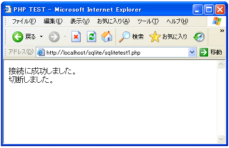
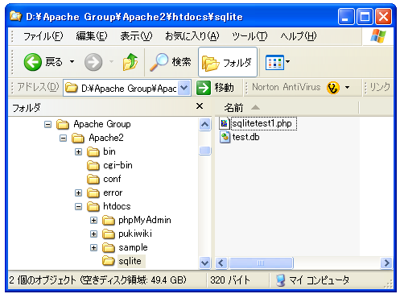

- Home ›
- PHP入門 ›
- SQLiteへの接続
データベースの作成とオープン
まずデータベースを作成します。事前にコマンドラインなどからデータベースを作成しておきたかったのですが、PHPにバンドルされているSQLiteをコマンドラインから使う方法が分かりませんでしたのでPHPの関数を使ってデータベースの作成も行います。
SQLiteのデータベースを作成したり既存のデータベースを開いたりするには「sqlite_open」関数を使います。
sqlite_open resource sqlite_open(string filename [,int mode [,string &error_message]])
SQLite データベースをオープン、もしくは存在しない場合データベースを生成
します。
引数:
filename SQLite データベースのファイル名。もしこのファイルが存在しな
い場合、SQLite はファイルを生成しようとします。データを挿入したり、
データベーススキーマを変更、もしくはデータベースが存在しない場合にデー
タベースを生成する場合、PHP はファイルに対する書き込み権限を持ってい
る必要があります。
mode ファイルのモード。読み込み専用モードでデータベースをオープンする
ために 使用することを目的としています。現在、このパラメータは SQLite
ライブラリに無視されます。このモードのデフォルト値は、8 進数値 0666
で、これは推奨される値です。
error_message 参照として渡され、エラーが発生した場合にデータベースが
オープンできなかった原因を説明する記述的なエラーメッセージを保持する
ために設定されます。
返り値:
成功時にリソース(データベースハンドル)、失敗時に FALSE を返します。
1番目の引数にデータベース名を指定します。存在するデータベースであればデータベースを開き、もし存在しなければ新規に作成します。
2番目の引数はファイルパーミッションの指定です。パーミッションは所有者、グループ、他人の3つの対象に対して、読み込み(4)、書き込み(2)、実行(1)のどの権限を与えるかを指定します。読み込みと書き込みを与える場合は4＋2＝6となります。先頭に0を付けて3つの対象に対してどの権限を付与するかを並べて記述するわけです。デフォルトの0666は全ての対象に対して読み込みと書き込みの権限を与える設定となります。
3番目の引数はエラーが発生した場合のエラーメッセージを格納する変数を指定します。
データベース名を"test.db"とした場合、下記のような記述となります。
$link = sqlite_open('test.db', 0666, $sqliteerror);
データベースからの切断
接続後、接続を切断するには「sqlite_close」関数を使います。
sqlite_close void sqlite_close(resource dbhandle)
指定したデータベースハンドル database を閉じます。このデータベースに持続 性がある場合、このデータベースは閉じられ、持続的データベースリストから削 除されます。 引数: dbhandle SQLite データベースリソース。
実際の使い方は下記のようになります。
$link = sqlite_open('test.db', 0666, $sqliteerror);
// SQLiteに対する処理
sqlite_close($link);
実際のテスト
では実際に試してみます。エラー処理まで含めたサンプルは下記のようになります。
<html>
<head><title>PHP TEST</title></head>
<body>
<?php
$link = sqlite_open('test.db', 0666, $sqliteerror);
if (!$link) {
die('接続失敗です。'.$sqliteerror);
}
print('接続に成功しました。<br>');
// SQLiteに対する処理
sqlite_close($link);
print('切断しました。<br>');
?>
</body>
</html>
上記ファイルをWWWサーバに設置しブラウザ経由で見ると下記のように表示されます。

今回は存在しないデータベースを指定しましたので、データベースが新規に作成されます。作成される位置は今回はファイル名だけ指定しましたので、実行したPHPのプログラムファイルがあるディレクトリと同じ場所に作成されます。

例えば違うディレクトリにデータベースを作成したり、データベースを開いたりする場合はPHPのファイルがある位置を基点として相対位置でデータベースファイル名を指定します。
$link = sqlite_open('./db/test.db', 0666, $sqliteerror);
$link = sqlite_open('../db/test.db', 0666, $sqliteerror);
( Written by Tatsuo Ikura )

著者 / TATSUO IKURA
初心者～中級者の方を対象としたプログラミング方法や開発環境の構築の解説を行うサイトの運営を行っています。